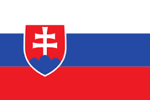
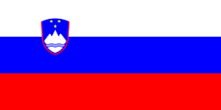
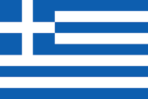
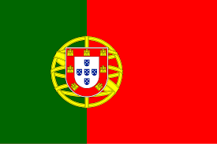
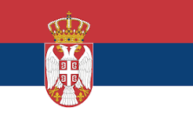
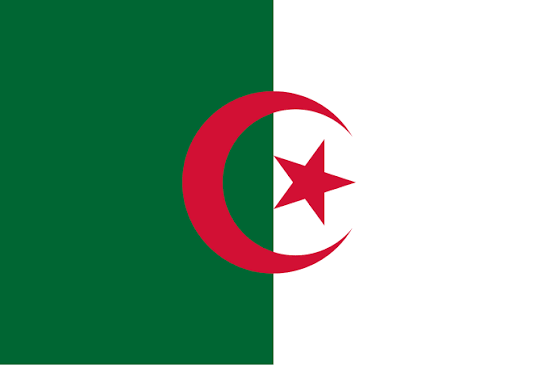

¿De qué se trató el Mundial de 2010?
La Copa Mundial de la FIFA 2010 fue la decimonovena edición del torneo y se disputó en Sudáfrica entre el 11 de junio y el 11 de julio de 2010. Esta cita marcó un hito histórico sin precedentes al tratarse de la primera Copa del Mundo celebrada en el continente africano. El evento estuvo impregnado de una atmósfera vibrante y festiva, dominada por el sonido ensordecedor de las vuvuzelas en las tribunas y bajo el lema del orgullo africano.
El campeonato estuvo marcado por hitos institucionales de enorme relevancia. Se continuó utilizando el trofeo oficial estrenado en 1974: la Copa Mundial de la FIFA, diseñada por Silvio Gazzaniga. A nivel organizativo, el formato se mantuvo con 32 selecciones distribuidas en 8 grupos de 4 equipos. En el aspecto reglamentario, se aplicaron de forma estricta las normativas de disciplina y se consolidó el formato clásico de prórrogas con dos tiempos de 15 minutos en caso de empate durante la fase eliminatoria.
En el plano futbolístico, el torneo coronó a un nuevo campeón mundial. La selección de España, dirigida por Vicente del Bosque, deslumbró al mundo con su característico estilo de posesión y precisión (tiki-taka). En la gran final, disputada en el Estadio Soccer City de Johannesburgo ante unos 84.490 espectadores, España derrotó a los Países Bajos por 1-0 gracias a un agónico gol de Andrés Iniesta en el minuto 116 del tiempo suplementario, en un partido sumamente físico y disputado.
España consiguió de esta forma su primer campeonato mundial, convirtiéndose además en la primera selección europea en coronarse fuera de su propio continente.
Informacion que tenes que saber
Info general
- País Anfitrión: Sudáfrica
- Fecha de Inicio:
11 de Junio de 2010
(11/06/2010) - Fecha de Finalizacion:
11 de Julio de 2010
(11/07/2010) - Duracion: 31 dias
- Organizador: FIFA
- Edicion: XIX
Estadisticas
- Partidos jugados: 64
- Goles anotados: 145
- Promedio de gol: 2,27 por partido
- Máximos goleadores:
Thomas Müller, Diego Forlán,
Wesley Sneijder y David Villa
(5 goles cada uno) - Final:
Países Bajos 0-1 (pró.) España
info de la Ciudad
- Ciudades Sede: 9
- Selecciones Participantes: 32
- Estadios Utilizados: 10
- Estadio Principal:
Soccer City (Johannesburgo) - Asistencia total:
3.178.856 espectadores
Podio
| Posicion | Seleccion | Bandera |
|---|---|---|
| 1º Puesto | España |  |
| 2º Puesto | Países Bajos |  |
| 3º Puesto | Alemania |  |
| 4º Puesto | Uruguay |  |
(Nota: España se consagró campeona del mundo por primera vez en su historia, tras vencer a Países Bajos por 1-0 gracias a un agónico gol de Andrés Iniesta en el minuto 116 de la prórroga. El tercer puesto quedó en manos de Alemania, mientras que Uruguay completó el podio en el cuarto lugar).
Historia completa de la Copa Mundial de la FIFA 2010
Sudáfrica fue elegida en 2004 sobre las candidaturas de Marruecos y Egipto para cumplir la promesa de la FIFA de llevar el torneo a África. Los estadios fueron construidos y renovados con diseños monumentales, destacando el Soccer City inspirado en una vasija de barro tradicional africana o calabash.
La fase de grupos deparó sorpresas dramáticas y caídas estrepitosas. Los dos finalistas de la edición anterior, Italia y Francia, sufrieron un colapso absoluto quedando eliminados en la primera fase en medio de fuertes crisis internas. Sudáfrica, pese al enorme aliento de su público, hizo historia de forma negativa al ser el primer país anfitrión en no superar la fase de grupos. Por el contrario, Sudamérica pisó fuerte colocando a sus cinco representantes en los octavos de final.
Desarrollo del torneo
La fase eliminatoria subió las pulsaciones a niveles históricos. En los cuartos de final, Uruguay y Ghana protagonizaron uno de los finales más dramáticos de la historia de los mundiales: en el último minuto de la prórroga, Luis Suárez salvó con la mano un gol inminente en la línea. Asamoah Gyan estrelló el penalti en el larguero y los charrúas avanzaron en la tanda de penaltis gracias a una sutil definición "a la Panenka" de Sebastián Abreu. Alemania, por su parte, desplegó un fútbol contragolpeador letal destrozando a Inglaterra (4-1) y a la Argentina de Diego Maradona (4-0).
La gran final
La final en Johannesburgo cruzó a España y los Países Bajos, garantizando un campeón inédito. El encuentro fue una batalla táctica de extrema dureza física, recordada por la brutal patada de Nigel de Jong sobre Xabi Alonso que el árbitro Howard Webb solo sancionó con tarjeta amarilla. El arquero español Iker Casillas se vistió de héroe al desviar con la punta de su bota un mano a mano providencial ante Arjen Robben.
Cuando la prórroga agonizaba y los penaltis parecían inevitables, un rechace capturado por Cesc Fàbregas habilitó a Andrés Iniesta, quien controló y cruzó un disparo potente al fondo de las mallas, dándole la gloria eterna a España.
España consiguió así su primer campeonato mundial, convirtiéndose además en la primera selección europea en coronarse fuera de su propio continente.
⚽ Pelota Oficial del Mundial 2010

ADIDAS JABULANI
El Jabulani ("celebrar" en idioma zulú) fue el balón oficial de la Copa Mundial de la FIFA Sudáfrica 2010, fabricado por la firma alemana Adidas. Presentó un diseño con 11 colores diferentes que representaban a los 11 jugadores de cada equipo, los 11 idiomas oficiales de Sudáfrica y las 11 comunidades de la nación anfitriona.
Información General
Nombre: Adidas Jabulani
Fabricante: Adidas (Alemania)
Material: Paneles premoldeados termosellados, buscando la mayor esfericidad posible
Diseño: 11 colores en representación de los 11 jugadores, los 11 idiomas oficiales y las 11 comunidades de Sudáfrica
Torneo: Copa Mundial FIFA Sudáfrica 2010
Características
- Diseñado con una nueva tecnología de paneles premoldeados termosellados para hacerlo más esférico.
- Su extrema ligereza le otorgaba una trayectoria aerodinámica particular en el aire.
- Desató feroces quejas de delanteros y, sobre todo, de guardametas, quienes lo tildaron de "pelota de playa" por sus extraños efectos en vuelo.
- Representó una nueva apuesta tecnológica de Adidas tras el +Teamgeist de 2006.
Dato curioso
A pesar de la polémica por su comportamiento en el aire, el Jabulani se convirtió en uno de los balones más recordados de la historia mundialista, precisamente por lo que generó entre los propios futbolistas durante el torneo.
Selecciones Participantes
Europa
Alemania  Dinamarca
Dinamarca 
Eslovaquia
Eslovenia España  Francia
Francia 
Grecia Inglaterra
Inglaterra  Italia Países Bajos
Italia Países Bajos 
Portugal
Serbia Suiza
Suiza Debutantes notables
Sudamérica
 Argentina
Argentina  Brasil
Brasil  Chile
Chile  Paraguay Uruguay
Paraguay Uruguay Norteamérica, Centroamérica y Caribe
 Honduras
Honduras  México
México  Estados Unidos
Estados Unidos Asia
 Corea del Sur
Corea del Sur  Corea del Norte
Corea del Norte  Japón
Japón  Australia
Australia África
 Sudáfrica (Anfitrión)
Sudáfrica (Anfitrión) 
Argelia Camerún
Camerún  Costa de Marfil
Costa de Marfil  Ghana
Ghana  Nigeria
Nigeria Oceanía
 Nueva Zelanda
Nueva Zelanda
Sedes |
|||
|---|---|---|---|
|
El Mundial de 2010 se disputó en nueve ciudades sede y diez estadios sudafricanos, varios de ellos construidos especialmente para la cita, con diseños monumentales que reflejaban la identidad del continente africano. El Estadio Soccer City de Johannesburgo, inspirado en una vasija de barro tradicional africana o calabash, fue la sede principal del torneo, albergando la gran final entre España y Países Bajos ante cerca de 84.490 espectadores. En total se jugaron 64 partidos repartidos entre los diez estadios, con una asistencia total de 3.178.856 espectadores a lo largo de todo el campeonato. (Nota: Fue el primer mundial disputado íntegramente en el continente africano, con el sonido característico de las vuvuzelas como sello distintivo en todos los estadios). |
|||
| Nombre del Estadio | Ciudad | Capacidad aprox. | Partidos Jugados |
Soccer City / National Stadium |
Johannesburgo | 84.490 | 8 (incl. la Gran Final) |
Estadio Green Point |
Ciudad del Cabo | 64.100 | 8 |
Estadio Moses Mabhida |
Durban | 62.760 | 7 |
Estadio Ellis Park |
Johannesburgo | 55.686 | 7 |
Estadio Loftus Versfeld |
Pretoria | 42.858 | 6 |
Estadio Nelson Mandela Bay |
Puerto Elizabeth | 42.486 | 6 |
Estadio Peter Mokaba |
Polokwane | 41.733 | 4 |
Estadio Free State |
Bloemfontein | 40.911 | 5 (incl. el Partido Inaugural) |
Estadio Mbombela |
Nelspruit | 40.929 | 4 |
Estadio Royal Bafokeng |
Rustenburgo | 38.646 | 4 |
Formato del torneo
El mundial de 2010 ejecutó la estructura de competición tradicional sin variantes logísticas transfronterizas:
Primera Fase de Grupos: Las 32 selecciones se organizaron en 8 grupos (del A al H) de 4 equipos cada uno. Avanzaron a la siguiente fase únicamente los dos mejores de cada zona.
Fase de Eliminación Directa: Cruces tradicionales a partido único desde Octavos de Final hasta la Gran Final. En caso de empate al cabo de los 90 minutos reglamentarios, se jugaron dos tiempos extra de 15 minutos cada uno. De persistir la paridad, el ganador se definió mediante tiros desde el punto de penalti.
Árbitros de la Copa Mundial de la FIFA 2010 por pais
| Arbitros | Pais |
|---|---|
| Howard Webb (Árbitro de la gran final) | |
| Jorge Larrionda | |
| Roberto Rosetti | |
| Martin Hansson |  |
| Viktor Kassai |  |
| Olegario Benquerença | |
| Carlos Batres |  |
| Carlos Simon | |
| Marco Antonio Rodríguez | |
| Stéphane Lannoy | |
| Yuichi Nishimura | |
Este mundial pasó a la historia como uno de los puntos de inflexión tecnológica más drásticos para la FIFA, debido a clamorosos errores arbitrales que aceleraron la posterior implementación del detector automático de goles y el VAR.
Resumen del torneo — Copa Mundial de la FIFA 2010
Primera Fase de Grupos
La fase de grupos deparó sorpresas dramáticas y caídas estrepitosas. Los dos finalistas de la edición anterior, Italia y Francia, sufrieron un colapso absoluto quedando eliminados en la primera fase en medio de fuertes crisis internas. Sudáfrica, pese al enorme aliento de su público, hizo historia de forma negativa al ser el primer país anfitrión en no superar la fase de grupos. Por el contrario, Sudamérica pisó fuerte colocando a sus cinco representantes en los octavos de final.
Fase de Eliminación Directa
Octavos de Final
Alemania
4:1
Inglaterra
Alemania desplegó un fútbol contragolpeador letal, en un partido marcado además por el "Gol Fantasma" de Frank Lampard, que el árbitro Jorge Larrionda no concedió pese a haber cruzado claramente la línea de meta.
Argentina
3:1
México
Carlos Tévez abrió el marcador en una posición adelantada evidente; la pantalla gigante del estadio repitió la jugada en vivo, pero al no existir el VAR el gol fue validado igual.
Cuartos de Final
Uruguay
1:1 (4:2 pen.)
Ghana
En el último minuto de la prórroga, Luis Suárez salvó con la mano un gol inminente en la línea. Asamoah Gyan estrelló el penalti en el larguero y Uruguay avanzó en la tanda de penaltis gracias a una definición "a la Panenka" de Sebastián Abreu.
Alemania
4:0
Argentina
Alemania destrozó a la Argentina de Diego Maradona con un contragolpe letal.
Semifinales
Semifinal 1
Países Bajos
3:2
Uruguay
Países Bajos selló su pase a la gran final tras un partido vibrante ante una Uruguay que había sido la gran sorpresa sudamericana del torneo.
Semifinal 2
Alemania
0:1
España
España se impuso a Alemania para sellar su pase a la gran final de Johannesburgo.
Gran Final
Finalistas
España Países BajosFinal
Países Bajos 0 España 1 (pró.)(Partido sumamente físico, recordado por la brutal patada de Nigel de Jong sobre Xabi Alonso que solo fue sancionada con tarjeta amarilla. Cuando los penaltis parecían inevitables, un rechace capturado por Cesc Fàbregas habilitó a Andrés Iniesta, quien controló y cruzó un disparo potente al fondo de las mallas en el minuto 116, dándole a España su primera estrella mundial.)
Máximos goleadores — Copa Mundial de la FIFA 2010
| Jugador | Goles | Pais |
|---|---|---|
| Thomas Müller | 5 | |
| Diego Forlán | 5 | |
| Wesley Sneijder | 5 | |
| David Villa | 5 | |
| Gonzalo Higuaín | 4 | |
| Robert Vittek | 4 | |
| Miroslav Klose | 4 | |
Máximos Asistidores (Premio a la Creación de Juego) — Copa Mundial de la FIFA 2010
| Jugador | Asistencias | Pais |
|---|---|---|
| Thomas Müller | 3 | |
| Mesut Özil | 3 | |
| Bastian Schweinsteiger | 3 | |
| Kaká | 3 | |
| Dirk Kuyt | 3 | |
Autogoles Registrados (Goles en Contra) — Copa Mundial de la FIFA 2010
El torneo registró autogoles a lo largo de los 64 partidos disputados:
| Jugador | A favor de | Pais |
|---|---|---|
| Daniel Agger | Países Bajos | |
| Park Chu-young | Argentina | |
Equipo estelar de los usuarios (FIFA Fan Dream Team) — Copa Mundial de la FIFA 2010
A diferencia de los comités técnicos cerrados, la FIFA habilitó por primera vez una votación global masiva a través de su plataforma digital para que los aficionados de todo el mundo armaran su once ideal bajo una formación táctica 4-4-2, reflejando el dominio absoluto de España, campeona del torneo.
| Jugador | Posición | Pais |
|---|---|---|
| Iker Casillas | Portero | |
| Sergio Ramos | Defensa | |
| Carles Puyol | Defensa | |
| Maicon | Defensa | |
| Philipp Lahm | Defensa | |
| Andrés Iniesta | Mediocampista | |
| Xavi Hernández | Mediocampista | |
| Bastian Schweinsteiger | Mediocampista | |
| Wesley Sneijder | Mediocampista | |
| Diego Forlán | Delantero | |
| David Villa | Delantero | |
Entrenador más votado: Vicente del Bosque (España)
Premios Oficiales — Copa Mundial de la FIFA 2010
| Premio | Jugador | Pais |
|---|---|---|
| 🥇 Mejor Jugador (Balón de Oro) | Diego Forlán | |
| ⚽ Ganador de la Bota de Oro | Thomas Müller (5 goles, 3 asistencias — desempate oficial) | |
| 🧤 Mejor Portero (Guante de Oro) | Iker Casillas | |
| 👶 Mejor Jugador Joven | Thomas Müller | |
| ✨ Gol del Torneo | Diego Forlán | |
| 🤝 Premio Fair Play | Selección de España | |
Estadísticas Analíticas Avanzadas: El Índice Castrol
Por primera vez en la historia de la Copa del Mundo, la FIFA implementó de forma oficial el Índice Castrol (Castrol Index), un sistema analítico de vanguardia que utilizaba tecnología de seguimiento de rendimiento físico y técnico para evaluar matemáticamente cada acción de los jugadores en el campo (pases, recuperaciones, disparos, entradas de los defensores) y otorgarles una calificación objetiva de 1 a 10.
| Jugador | Puntaje | Pais |
|---|---|---|
| Sergio Ramos (Líder absoluto gracias a su enorme despliegue defensivo y proyección al ataque) | 9.79 | |
| Joan Capdevila (Efectividad perfecta en transiciones defensivas y recuperaciones) | 9.74 | |
| Carles Puyol (Solidez aérea y porcentaje de entradas ganadas insuperable) | 9.70 | |
| Philipp Lahm | 9.66 | |
| Gerard Piqué | 9.56 | |
Controversias de la Copa Mundial de la FIFA 2010
El primer mundial en tierras africanas es recordado como uno de los puntos de inflexión tecnológica más drásticos en la historia de la FIFA, debido a clamorosos errores arbitrales que aceleraron la posterior implementación del detector automático de goles y el VAR.
-
El "Gol Fantasma" de Frank Lampard (Octavos de Final)
La polémica más grave del torneo se vivió en Bloemfontein durante el clásico entre Alemania e Inglaterra. Con el marcador 2-1 a favor de los germanos, el mediocampista inglés Frank Lampard sacó un potente disparo que impactó en el travesaño y picó claramente casi un metro dentro de la portería del guardameta Manuel Neuer antes de salir. El árbitro uruguayo Jorge Larrionda y su asistente Mauricio Espinosa dictaminaron erróneamente que el balón no había cruzado la línea y ordenaron seguir el juego. El clamor internacional ante la injusticia televisada obligó al presidente de la FIFA, Joseph Blatter, a pedir disculpas públicas a la federación inglesa y a reabrir el debate sobre la tecnología en el fútbol.
-
El gol en fuera de juego de Carlos Tévez (Octavos de Final)
Pocas horas después del incidente de Lampard, la polémica se trasladó a Johannesburgo en el choque entre Argentina y México. El delantero argentino Carlos Tévez abrió el marcador anotando un gol de cabeza en una posición adelantada evidente y escandalosa. Mientras los jugadores mexicanos protestaban enérgicamente, la pantalla gigante del Estadio Soccer City repitió la jugada en vivo, permitiendo que todo el estadio —incluido el cuerpo arbitral comandado por el italiano Roberto Rosetti— viera el error en tiempo real. Al no existir el VAR en esa época, las leyes de la FIFA impedían modificar la decisión mediante el uso de la pantalla, validando el gol ilegal y desatando una monumental tangana en la cancha.
-
La brutal patada de Nigel de Jong (Gran Final)
La final entre España y Países Bajos pasó a la historia por la extrema permisividad del colegiado inglés Howard Webb ante el juego brusco de la escuadra neerlandesa. En el minuto 28, el centrocampista Nigel de Jong propinó una brutal e impactante patada al estilo de las artes marciales directamente en el pecho de Xabi Alonso. A pesar de que la acción merecía una tarjeta roja directa incuestionable por juego brusco grave, Webb solo mostró una tarjeta amarilla, una decisión que el propio árbitro admitió años después haber sido un error condicionado por la presión de no querer expulsar a un jugador tan temprano en una final.
-
El gol de la clasificación de Francia (Fase de Clasificación)
Aunque ocurrió en la repesca continental previa al mundial, la clasificación misma de Francia estuvo envuelta en el escándalo más grande del proceso eliminatorio. En la prórroga del partido definitivo contra Irlanda en París, el delantero francés Thierry Henry controló descaradamente el balón con la mano dentro del área para asistir a William Gallas, quien anotó el gol del boleto mundialista. La trampa no fue vista por el árbitro sueco Martin Hansson, provocando protestas diplomáticas del gobierno de Irlanda, que llegó a pedir formalmente (y sin éxito) la repetición del partido.
-
La mano de Luis Suárez y el "milagro" charrúa (Cuartos de Final)
En el último segundo de la prórroga entre Uruguay y Ghana, un cabezazo ghanés iba a convertirse en el gol que clasificaría por primera vez a un equipo africano a las semifinales de un mundial. El delantero uruguayo Luis Suárez, en un acto reflejo, detuvo el balón con ambas manos sobre la línea de gol. Suárez fue expulsado de inmediato y se dictaminó penalti, pero la controversia se avivó cuando Asamoah Gyan erró el tiro y Suárez fue captado por las cámaras celebrando eufóricamente en el túnel de vestuarios. Esto abrió un debate ético global sobre el límite entre la trampa, el sacrificio y la astucia deportiva.
Identidad del Torneo: Diseño, Marketing y Medios
La Revolución de la Inauguración
La ceremonia inaugural tuvo lugar el 11 de junio de 2010 en el Estadio Soccer City de Johannesburgo. Fue una explosión de color, danzas tribales y música contemporánea africana que unió la tradición del continente con la modernidad global. Contó con las actuaciones de estrellas internacionales de origen africano y el clímax se alcanzó con la recreación de un baobab gigante en el centro del campo y un desfile multicolor representativo de las naciones participantes.
Mascota Oficial: "Zakumi"
Un leopardo antropomórfico con el pelo teñido de verde y una camiseta blanca con la inscripción South Africa 2010. Su nombre provenía de "ZA" (el código ISO para Sudáfrica) y "Kumi" (que significa diez en varias lenguas africanas, en referencia al año del torneo).
Canción Oficial: "Waka Waka (This Time for Africa)"
Interpretada por la estrella colombiana Shakira junto al grupo sudafricano Freshlyground. Se convirtió en un fenómeno cultural masivo a nivel global y es considerada una de las canciones más icónicas y alegres en la historia de los mundiales. Convivió con el himno popular "Wavin' Flag" de K'naan, que también adoptó un éxito descomunal en las campañas publicitarias.
Balón Oficial: Adidas Jabulani
Su nombre significaba "celebrar" en idioma zulú. Presentaba un diseño con 11 colores diferentes que representaban a los 11 jugadores de cada equipo, los 11 idiomas oficiales de Sudáfrica y las 11 comunidades de la nación anfitriona. Fue diseñado con una nueva tecnología de paneles premoldeados termosellados para hacerlo más esférico, aunque su extrema ligereza y trayectoria aerodinámica impredecible desataron feroces quejas de delanteros y, sobre todo, de guardametas, quienes lo tildaron de "pelota de playa".
El Récord Histórico de las Clasificaciones
Un total de 204 selecciones nacionales de las 6 confederaciones de la FIFA disputaron las eliminatorias rumbo al primer mundial africano. Sudáfrica clasificó automáticamente por ser el país organizador, mientras que Italia (campeón de 2006) debió jugar y ganar su boleto en las eliminatorias de la UEFA. Las selecciones de Eslovaquia y Serbia asistieron por primera vez bajo esas identidades independientes tras los cambios geopolíticos en Europa.
El Legado del Torneo
El certamen dejó un legado transformador: marcó la primera Copa del Mundo celebrada en suelo africano, consagró a España como su primera campeona mundial y la primera selección europea en coronarse fuera de su propio continente, e introdujo el Índice Castrol como herramienta analítica oficial de la FIFA. Además, sus polémicas arbitrales aceleraron de forma decisiva la posterior llegada del videoarbitraje al fútbol mundial.
Tabla de Rendimiento y Posiciones Finales
| Posicion | Seleccion | Pts | PJ | PG | PE | PP | GF | GC | Dif | Rendimiento |
|---|---|---|---|---|---|---|---|---|---|---|
| 1 | España |
18 | 7 | 6 | 0 | 1 | 8 | 2 | +6 | 85,7% |
| 2 | Países Bajos |
18 | 7 | 6 | 0 | 1 | 12 | 6 | +6 | 85,7% |
| 3 | Alemania |
15 | 7 | 5 | 0 | 2 | 16 | 5 | +11 | 71,4% |
| 4 | Uruguay |
11 | 7 | 3 | 2 | 2 | 11 | 8 | +3 | 52,4% |
| 5 | Argentina |
12 | 5 | 4 | 0 | 1 | 10 | 6 | +4 | 80,0% |
| 6 | Brasil |
10 | 5 | 3 | 1 | 1 | 9 | 4 | +5 | 66,7% |
| 7 | Ghana |
8 | 5 | 2 | 2 | 1 | 5 | 4 | +1 | 53,3% |
| 8 | Paraguay |
6 | 5 | 1 | 3 | 1 | 3 | 2 | +1 | 40,0% |
| 9 | Japón |
7 | 4 | 2 | 1 | 1 | 4 | 2 | +2 | 58,3% |
| 10 | Chile |
6 | 4 | 2 | 0 | 2 | 3 | 5 | -2 | 50,0% |
| 11 | Portugal | 5 | 4 | 1 | 2 | 1 | 7 | 1 | +6 | 41,7% |
| 12 | Estados Unidos |
5 | 4 | 1 | 2 | 1 | 5 | 5 | 0 | 41,7% |
| 13 | Inglaterra |
5 | 4 | 1 | 2 | 1 | 3 | 5 | -2 | 41,7% |
| 14 | México |
4 | 4 | 1 | 1 | 2 | 4 | 5 | -1 | 33,3% |
| 15 | Corea del Sur |
4 | 4 | 1 | 1 | 2 | 6 | 8 | -2 | 33,3% |
| 16 | Eslovaquia | 4 | 4 | 1 | 1 | 2 | 5 | 7 | -2 | 33,3% |
| 17 | Costa de Marfil |
4 | 3 | 1 | 1 | 1 | 4 | 3 | +1 | 44,4% |
| 18 | Eslovenia | 4 | 3 | 1 | 1 | 1 | 3 | 3 | 0 | 44,4% |
| 19 | Suiza |
4 | 3 | 1 | 1 | 1 | 1 | 1 | 0 | 44,4% |
| 20 | Sudáfrica |
4 | 3 | 1 | 1 | 1 | 3 | 5 | -2 | 44,4% |
| 21 | Australia |
4 | 3 | 1 | 1 | 1 | 3 | 6 | -3 | 44,4% |
| 22 | Nueva Zelanda |
3 | 3 | 0 | 3 | 0 | 2 | 2 | 0 | 33,3% |
| 23 | Serbia | 3 | 3 | 1 | 0 | 2 | 2 | 3 | -1 | 33,3% |
| 24 | Dinamarca |
3 | 3 | 1 | 0 | 2 | 3 | 6 | -3 | 33,3% |
| 25 | Grecia | 3 | 3 | 1 | 0 | 2 | 2 | 5 | -3 | 33,3% |
| 26 | Italia |
2 | 3 | 0 | 2 | 1 | 4 | 5 | -1 | 22,2% |
| 27 | Nigeria |
1 | 3 | 0 | 1 | 2 | 3 | 5 | -2 | 11,1% |
| 28 | Argelia | 1 | 3 | 0 | 1 | 2 | 0 | 2 | -2 | 11,1% |
| 29 | Francia |
1 | 3 | 0 | 1 | 2 | 1 | 4 | -3 | 11,1% |
| 30 | Honduras |
1 | 3 | 0 | 1 | 2 | 0 | 3 | -3 | 11,1% |
| 31 | Camerún |
0 | 3 | 0 | 0 | 3 | 2 | 5 | -3 | 0,0% |
| 32 | Corea del Norte |
0 | 3 | 0 | 0 | 3 | 1 | 12 | -11 | 0,0% |
- PTS: PUNTOS
- PJ: PARTIDOS JUGADOS
- PG: PARTIDOS GANADOS
- PE: PARTIDOS EMPATADOS
- PP: PARTIDOS PERDIDOS
- GF: GOLES A FAVOR
- GC: GOLES EN CONTRA
- DIF: DIFERENCIA DE GOL
- RENDIMIENTO: BASADA EN LA EFECTIVIDAD DE PARTIDOS (PG, PE, PP)